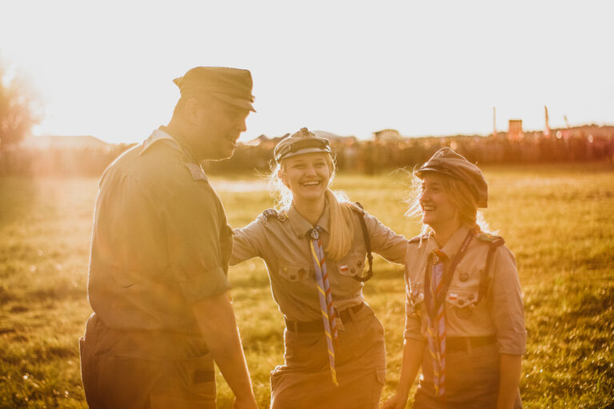

Chorągiew Białostocka ZHP
im. hm. Ryszarda Kaczorowskiego

Początki działaności harcerskiej na Podlasiu.
Harcerstwo białostockie w okresie międzywojennym.
Działalność po II wojnie światowej.
| Choragiew Białostocka ZHP im. hm. Ryszarda Kaczorowskiego | |
| Rodzaj jednostki | Chorągiew |
| Jednostka nadrzędna | Główna Kwatera ZHP |
| Jednostki podległe | 8 hufców |
| Rok powstania pierwszych drużyn | 1913 |
| Adres siedziby | ul. Pałacowa 3/1 15-042 Białystok |
Chorągiew Białostocka współcześnie
| Hufiec | Adres | Komendant |
| Augustów | ul. Zarzecze 3A 16-300 Augustów | phm. Leszek Siemionowicz |
| Białystok | ul. Sienkiewicza 22 15-420 Białystok | hm. Justyna Gerasimiuk |
| Bielsk Podlaski | ul. Widowska 1/1 17-100 Bielsk Podlaski | phm. Ewa Aciuszkiewicz |
| „Biebrzański” w Grajewie | ul. Ełcka 30 19-200 Grajewo | hm. Elwira Wierzbicka |
| Kolno | ul. Marii Dąbrowskiej 4 18-500 Kolno | phm. Martyna Fankulewska |
| " Nadnarwiański" w Łomży | ul. Polowa 11a 18-400 Łomża | hm. Wiesław Domański |
| Sokółka | ul. Grodzieńska 47 16-100 Sokółka | hm. Łukasz Kojta |
| Suwałki | ul.Noniewicza 91 lok. 8 (Parter) 16-400 Suwałki | phm. Aleksandra Hanc |